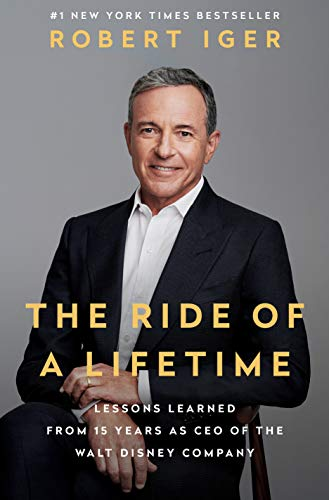

The Ride of a Lifetime, by Iger
Monday June 20, 2022
Bob starts chapter one with “This book is not a memoir,” so you know from the start you're dealing with an unreliable narrator. Compared to Catmull in Creativity, Inc., Iger does seem more direct, and his experiences are interesting, but I like Iger less, I think.

Here are Iger's ten principles from the prologue:
- Optimism
- Courage
- Focus
- Decisiveness
- Curiosity
- Fairness
- Thoughtfulness
- Authenticity
- The Relentless Pursuit of Perfection
- Integrity
On page 9, you get a story of how some coworker exposed himself to Iger.
"As for all the glamour, there is (and eventually there was) a convincing argument to be made that living that high off the hog was irresponsible." (page 14)
I wonder if the old TV business is analogous to the current tech scene...
"I’ve found that often people will focus on little details as a way of masking a lack of any clear, coherent, big thoughts." (page 43)
This is legit.
"I wouldn’t as a rule recommend promoting someone as rapidly as they promoted me," (page 49)
haha~
"I wanted the merger to go well, and I wanted to make sure the Capital Cities team was treated well by Disney. Without me there, I was fairly certain they would get subsumed by Disney in potentially dispiriting ways." (page 53)
This guy, huh?
"Managing your own time and respecting others’ time is one of the most vital things to do as a manager," (page 63)
Concur.
"these are the people to nurture—not the ones who are clamoring for promotions and complaining about not being utilized enough but the ones who are proving themselves to be indispensable day in and day out." (page 66)
Concur.
"He wanted the “albino Mickeys,” as he called them, taken from the shelves, which we didn’t do, but it was a huge distraction." (page 87)
Crazy micro-managing board member...
"I’ve always prided myself on my ability and willingness to put in a greater effort than anyone else." (page 104)
This guy, huh? He elsewhere makes a point of how he didn't take a two-week vacation until late in his career.
"I could control what I did and how I comported myself. Everything else was beyond my control." (page 109)
See also: The Enchiridion
"pushing strategic responsibility back to the businesses sooner rather than later. I hoped that if we could reduce the grip that Strat Planning had over all of our divisions, we would slowly begin to restore the company’s morale." (page 116)
This is one of the more interesting things he actually did, moving toward more decentralization. Seems good.
"We landed on Twitter." (page 190)
I didn't realize Disney had been close to acquiring Twitter!
"Twitter was a potentially powerful platform for us, but I couldn’t get past the challenges that would come with it. The challenges and controversies were almost too much to list, but they included how to manage hate speech, and making fraught decisions regarding freedom of speech, what to do about fake accounts algorithmically spewing out political “messaging” to influence elections, and the general rage and lack of civility that was sometimes evident on the platform. Those would become our problems. They were so unlike any we’d encountered, and I felt they would be corrosive to the Disney brand. On the Sunday after the board had just given me the go-ahead to pursue the acquisition of Twitter, I sent a note to all of the members telling them I had “cold feet,” and explaining my reasoning for withdrawing. Then I called Jack Dorsey, Twitter’s CEO, who was also a member of the Disney board. Jack was stunned, but very polite. I wished Jack luck, and I hung up feeling relieved." (page 190)
"I would decide at the end of each year how much stock would vest, and that it was going to be based not on revenue but on how well they were able to work together. “I don’t want any politics,” I said. “This is too important. It’s for the good of the company, and it’s good for you. I need you to step up.”" (page 196)
This is interesting too; kind of the reverse of decentralization, but I like how it gets away from purely quantified compensation.
"My new retirement date is December 2021," (page 221)
Bob's Wikipedia page makes it seem like this was not the initial plan, but here it seems like it was?
"Esther Newberg, for your guidance and for talking me into writing this book. You said it was going to be easy and you sure were wrong!" (page 236)